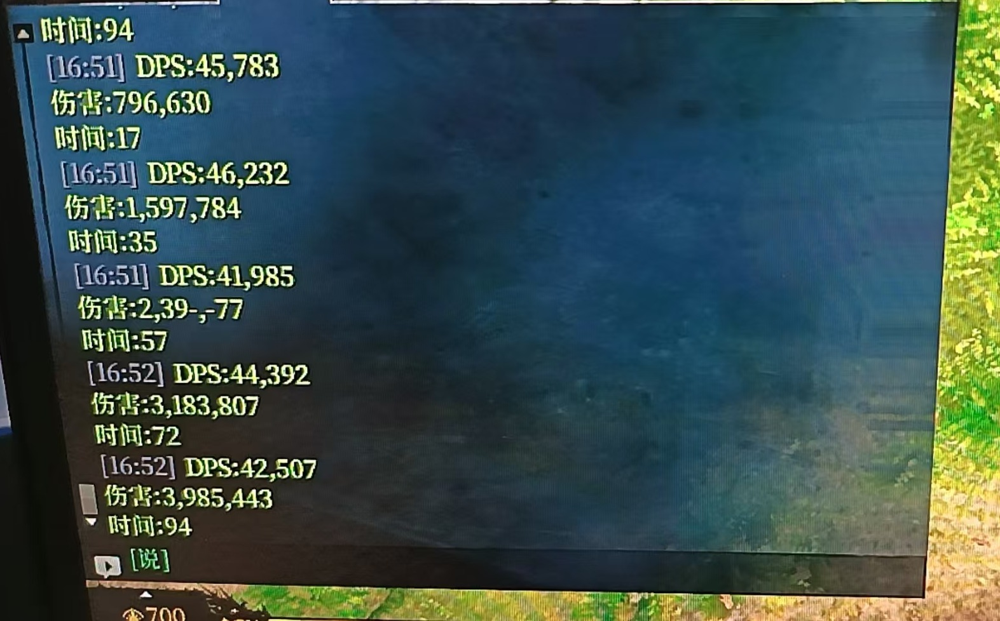
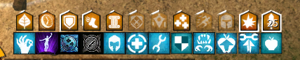

直伤鼠鼠
石峰会加农炮|石峰会加农炮，召唤炮台f2，召唤炮台f4，塑性者f2，塑性者f4，查克虫盾f3，查克虫盾f4，迫击炮f2，迫击炮f4，吉他f2，吉他f4，全息舞者诱饵f3，全息舞者诱饵f4，日相水晶f3，日相水晶f4，尊者f3，尊者f4，F2黑=F3黑=F4黑=斯克鼠f1，F1黑=F2黑=F3黑=F4黑=斯克鼠乱斗，剑3，加农炮回火，先攻值反色=硬币投掷，普攻|有全息舞者=刺客纹章|蔑视，枪4
石峰会加农炮,c,522|召唤炮台f2,f2,500,,,,,,,,,,,,,,,,,触发,0,,1|召唤炮台f4,f4,500,,,,,,,,,,,,,,,,,触发,0,,1|塑性者f2,f2,256,,,,,,,,,,,,,,,,,触发,0,,1|塑性者f4,f4,256,,,,,,,,,,,,,,,,,触发,0,,1|查克虫盾f3,f3|查克虫盾f4,f4|迫击炮f2,f2,683,,,,,,,,,,,,,,,,,触发,0,,1|迫击炮f4,f4,683,,,,,,,,,,,,,,,,,触发,0,,1|吉他f2,f2,1437,,,,,,,,,,,,,,,,,触发,0,,1|吉他f4,f4,1437,,,,,,,,,,,,,,,,,触发,0,,1|全息舞者诱饵f3,f3,646,,,,,,,,,,,,,,,,,触发,0,,1|全息舞者诱饵f4,f4,646,,,,,,,,,,,,,,,,,触发,0,,1|日相水晶f3,f3,209,,,,,,,,,,,,,,,,,触发,0,,1|日相水晶f4,f4,209,,,,,,,,,,,,,,,,,触发,0,,1|尊者f3,f3,450|尊者f4,f4,450|F2黑|F3黑|F4黑|斯克鼠f1,f1,220,,,,,,,,,,,,,,,,,触发,0,,1|F1黑|斯克鼠乱斗,r,579,,,,,,,,,,,,,,,,,触发,0,,1|剑3,1,1400|加农炮回火,e,520|先攻值反色,,,,,,,,,ifnot|硬币投掷,z|普攻,q|有全息舞者,,,,,,,,,,,pic,,,-882,652,-882,652,0,触发,0,,0,,50|刺客纹章,x,0,,,,,,,,,,,,1344,1317,1504,1344,60|蔑视|枪4,2,100
[&DQUcPSMbTT+FAIUAMwEzAVkdWwFgHVcBfB0oAAAAAAAAAAAAAAAAAAAAAAADWgA2AAUAAA==]
狂战士，剑枪, 武勇 冲击法印, 上25精准灌注或改几件刺客 精准2008就可以满暴

标灌 0.9延迟 可以再调低点
评论列表（18）
大佬，加农炮和回火的按键好像错了。先攻值反色是取色哪个豆呢
有全息舞者，取色还是有问题，如果取BUFF栏，有时候BUFF多，有时候BUFF少，抓不准
如果取F3 F4技能栏，那么只能取一个，有全息舞者=刺客纹章。
有全息舞者F3=刺客纹章，有全息舞者F4=刺客纹章。是这个意思吗？
@尺寸 窗口模式截图
@尺寸 范围找色 取全息那个图左上紫
@尺寸 整个BUFF栏范围框下来
@ET 还事不懂

加农炮回火怎么取色和有全息舞者怎么取色
@LEIZI 有全息舞者是指你的BUFF栏 有个跳舞小人时 取范围
@ET
@LEIZI 回火取加农炮使用后周边转着的红色框框
加农炮回火怎么取色
@1111111111 第一次加农炮用完读条的时候取1点第二段 就是再用一次
这是多少灌注的伤害？
@南枫 标准+5 食物 板手也是正常 换令状能更高 但是F2~F5看抽奖 有3K左右的上下波动
有全息舞者，怎么意思？怎么取色？
@尺寸 就是F2到F4 用F1刷 刷到指定的F3 F4出全息时取色 一般左上11点左右或取中间
古物潜行者